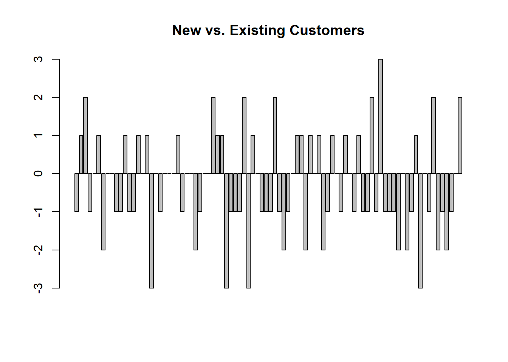

df <- read.csv("data/scripting-test.csv")
head(df, n = 10)Scripting Test
Instructions
The objective of this exercise is to test your ability to read, clean, transform, visualize and interpret data using R or Python. You are provided a CSV file with some sample marketing sales data for an e-commerce website. You may choose either R or Python to complete the exercise. If you prefer, then you may also use R markdown or Python notebook format.
R
Question 1
Read the data into an R or Pandas data frame. Display the top 10 rows of the data frame.
| Date | Channel | Customer_Type | Revenue | Customer_Count | Gross_Profit | Marketing_Spend |
|---|---|---|---|---|---|---|
| 1/1/2017 | Organic Social | NEW | 2802.44 | 22 | 700.84 | 201.79 |
| 1/1/2017 | Organic Social | EXISTING | 3471.09 | 25 | 1110.40 | 249.75 |
| 1/1/2017 | Brand | NEW | 81.45 | 2 | 29.87 | 717.99 |
| 1/1/2017 | Unidentified | NEW | 15465.99 | 80 | 5291.55 | 738.66 |
| 1/1/2017 | Brand | EXISTING | 180.46 | 3 | 51.48 | 1595.63 |
| 1/1/2017 | Unidentified | EXISTING | 24834.60 | 256 | 9558.39 | 1798.70 |
| 1/1/2017 | Others | EXISTING | 14187.90 | 141 | 4530.53 | 2868.98 |
| 1/1/2017 | Others | EXISTING | 14187.90 | 141 | 4530.53 | 2868.98 |
| 1/1/2017 | Others | NEW | 17436.84 | 257 | 5438.96 | 4084.93 |
| 1/1/2017 | Organic Search | NEW | 87085.60 | 605 | 27992.77 | 8080.30 |
Question 2
Within this 90-day data set, we observe traffic from an “Unidentified”marketing channel coming to the site. We would like to identify the number of “existing” customers by day from this channel. (“Existing” customers are defined as those who have made a purchase in the past) Please demonstrate this result in a visualization. Are there any insights that you could derive from the visualization? What is the total spend amount and daily average spend on these existing customers?
library(dplyr)
unidentified <- filter(df, Customer_Type == "EXISTING" & Channel == "Unidentified")
head(unidentified, n = 10)| Date | Channel | Customer_Type | Revenue | Customer_Count | Gross_Profit | Marketing_Spend |
|---|---|---|---|---|---|---|
| 1/1/2017 | Unidentified | EXISTING | 24834.60 | 256 | 9558.39 | 1798.70 |
| 1/2/2017 | Unidentified | EXISTING | 43867.66 | 358 | 16562.70 | 4350.60 |
| 1/3/2017 | Unidentified | EXISTING | 34362.89 | 306 | 12352.22 | 3125.71 |
| 1/4/2017 | Unidentified | EXISTING | 29633.28 | 263 | 11024.59 | 2631.01 |
| 1/5/2017 | Unidentified | EXISTING | 33909.79 | 279 | 12760.81 | 2952.61 |
| 1/6/2017 | Unidentified | EXISTING | 30249.77 | 267 | 11259.25 | 2603.64 |
| 1/7/2017 | Unidentified | EXISTING | 29537.40 | 264 | 11460.25 | 2761.95 |
| 1/7/2017 | Unidentified | EXISTING | 29537.40 | 264 | 11460.25 | 2761.95 |
| 1/8/2017 | Unidentified | EXISTING | 32970.22 | 289 | 12465.44 | 2614.85 |
| 1/9/2017 | Unidentified | EXISTING | 38188.38 | 321 | 13822.41 | 3204.54 |
barplot(unidentified$Customer_Count, main="Customer Count by Day")
sum(unidentified$Marketing_Spend)[1] 330185.8mean(unidentified$Marketing_Spend)[1] 3588.976Question 3
We believe that the Brand channel drives more New Customers than Existing Customers. We would like to verify this statement using the data provided. Please provide the daily difference between Brand channel’s New Customers and Existing Customers using a visualization. Are there any insights from the visualization?
brand <- df |>
filter(df$Channel == "Brand")
brand <- brand |>
mutate("New" = if_else(Customer_Type == "NEW", Customer_Count, 0)) |>
mutate("Existing" = if_else(Customer_Type == "EXISTING", Customer_Count, 0))
brand <- brand |> group_by(Date)
brand <- brand |> summarise(
New = sum(New),
Existing = sum(Existing)
)
brand[is.na(brand)] <- 0
brand <- brand |>
mutate("Delta" = New - Existing)
head(brand, n = 10)| Date | New | Existing | Delta |
|---|---|---|---|
| 1/1/2017 | 2 | 3 | -1 |
| 1/10/2017 | 1 | 0 | 1 |
| 1/12/2017 | 2 | 0 | 2 |
| 1/13/2017 | 0 | 1 | -1 |
| 1/14/2017 | 1 | 1 | 0 |
| 1/15/2017 | 1 | 0 | 1 |
| 1/16/2017 | 1 | 3 | -2 |
| 1/17/2017 | 1 | 1 | 0 |
| 1/18/2017 | 1 | 1 | 0 |
| 1/19/2017 | 1 | 2 | -1 |
barplot(brand$Delta, main="New vs. Existing Customers")
Question 4
Please calculate ‘Marketing_Contribution’ using formula: Marketing_Contribution = Gross_Profit - Marketing_Spend. Make a plot of the daily Marketing_Contribution at the aggregated level (for all channels and customer types together)
mc <- df |>
mutate(Marketing_Contribution = Gross_Profit - Marketing_Spend)
head(mc, n = 10)| Date | Channel | Customer_Type | Revenue | Customer_Count | Gross_Profit | Marketing_Spend | Marketing_Contribution |
|---|---|---|---|---|---|---|---|
| 1/1/2017 | Organic Social | NEW | 2802.44 | 22 | 700.84 | 201.79 | 499.05 |
| 1/1/2017 | Organic Social | EXISTING | 3471.09 | 25 | 1110.40 | 249.75 | 860.65 |
| 1/1/2017 | Brand | NEW | 81.45 | 2 | 29.87 | 717.99 | -688.12 |
| 1/1/2017 | Unidentified | NEW | 15465.99 | 80 | 5291.55 | 738.66 | 4552.89 |
| 1/1/2017 | Brand | EXISTING | 180.46 | 3 | 51.48 | 1595.63 | -1544.15 |
| 1/1/2017 | Unidentified | EXISTING | 24834.60 | 256 | 9558.39 | 1798.70 | 7759.69 |
| 1/1/2017 | Others | EXISTING | 14187.90 | 141 | 4530.53 | 2868.98 | 1661.55 |
| 1/1/2017 | Others | EXISTING | 14187.90 | 141 | 4530.53 | 2868.98 | 1661.55 |
| 1/1/2017 | Others | NEW | 17436.84 | 257 | 5438.96 | 4084.93 | 1354.03 |
| 1/1/2017 | Organic Search | NEW | 87085.60 | 605 | 27992.77 | 8080.30 | 19912.47 |
barplot(mc$Marketing_Contribution, main="Marketing Contribution")
Question 5
Find correlation between Paid Search Revenue and Organic Search Revenue - as a calculation as well as a plot.
search <- df |>
filter(df$Channel %in% c("Paid Search", "Organic Search"))
search <- search |>
mutate("Paid" = if_else(Channel == "Paid Search", Revenue, 0)) |>
mutate("Organic" = if_else(Channel == "Organic Search", Revenue, 0))
search <- search |> group_by(Date)
search <- search |> summarise(
Paid = sum(Paid),
Organic = sum(Organic)
)
search[is.na(search)] <- 0
head(search, n = 10)| Date | Paid | Organic |
|---|---|---|
| 1/1/2017 | 304585.5 | 201553.0 |
| 1/10/2017 | 225208.6 | 128184.4 |
| 1/11/2017 | 198156.8 | 123618.3 |
| 1/12/2017 | 210197.6 | 125007.6 |
| 1/13/2017 | 175905.2 | 103175.5 |
| 1/14/2017 | 208245.9 | 150135.4 |
| 1/15/2017 | 236808.2 | 180538.1 |
| 1/16/2017 | 268583.6 | 179252.9 |
| 1/17/2017 | 205861.5 | 146634.5 |
| 1/18/2017 | 217794.6 | 139864.3 |
cor(search$Paid, search$Organic)[1] 0.8457697plot(search$Paid, search$Organic)Python
Question 1
Read the data into an R or Pandas data frame. Display the top 10 rows of the data frame.
import pandas as pd
df = pd.read_csv("data/scripting-test.csv")
df.head(10) Date Channel ... Gross_Profit Marketing_Spend
0 1/1/2017 Organic Social ... 700.84 201.79
1 1/1/2017 Organic Social ... 1110.40 249.75
2 1/1/2017 Brand ... 29.87 717.99
3 1/1/2017 Unidentified ... 5291.55 738.66
4 1/1/2017 Brand ... 51.48 1595.63
5 1/1/2017 Unidentified ... 9558.39 1798.70
6 1/1/2017 Others ... 4530.53 2868.98
7 1/1/2017 Others ... 4530.53 2868.98
8 1/1/2017 Others ... 5438.96 4084.93
9 1/1/2017 Organic Search ... 27992.77 8080.30
[10 rows x 7 columns]Question 2
Within this 90-day data set, we observe traffic from an “Unidentified”marketing channel coming to the site. We would like to identify the number of “existing” customers by day from this channel. (“Existing” customers are defined as those who have made a purchase in the past) Please demonstrate this result in a visualization. Are there any insights that you could derive from the visualization? What is the total spend amount and daily average spend on these existing customers?
Question 3
We believe that the Brand channel drives more New Customers than Existing Customers. We would like to verify this statement using the data provided. Please provide the daily difference between Brand channel’s New Customers and Existing Customers using a visualization. Are there any insights from the visualization?
Question 4
Please calculate ‘Marketing_Contribution’ using formula: Marketing_Contribution = Gross_Profit - Marketing_Spend. Make a plot of the daily Marketing_Contribution at the aggregated level (for all channels and customer types together)
Question 5
Find correlation between Paid Search Revenue and Organic Search Revenue - as a calculation as well as a plot.